For this project, we are tasked with implementing the De Casteljau Algorithm for Bezier Curves/Surfaces, as well as incorporating basic mesh operations such as edge-flip, edge-cut, and upsampling into a Mesh Editor that utilizes the half-edge data structure. Through this project, we were able to improve our understanding of Bezier curves/surfaces and become more familiar with navigating mesh structures using the half-edge data structure. We present our work in this report, where we demonstrate the different geometric shapes and meshes that can be created using the features we implemented.
De Casteljau's algorithm is a way to draw a curve given a set of control points. Linear interpolation is used in the process to continuously generate new control points from the previous set of control points. This is done based on the parametrization of the variable t. At a given timestep t, we take the given line drawn from control point i and i+1 and find the intermediate value that lies at 1-t * (p_i) + t * (p_i+1) which will be our new control point i’. At each step, we will have 1 less control point than the previous subdivision. Once all n control points have been recursively evaluated down to 1 point, we have arrived at a point along our interpolated curve as denoted below at the red point. In order to perform this action, our code works by looping through the inputted control points and using the aforementioned linear interpolation operation to generate a new set of control points evaluated at t.
See screenshots below.
|
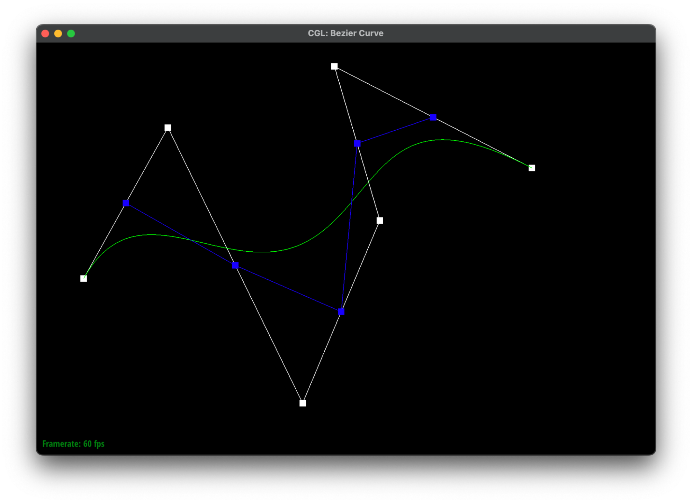
|
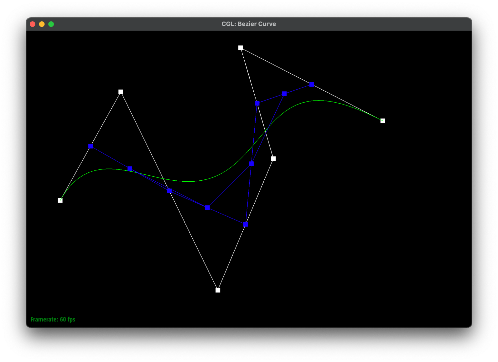
|
|
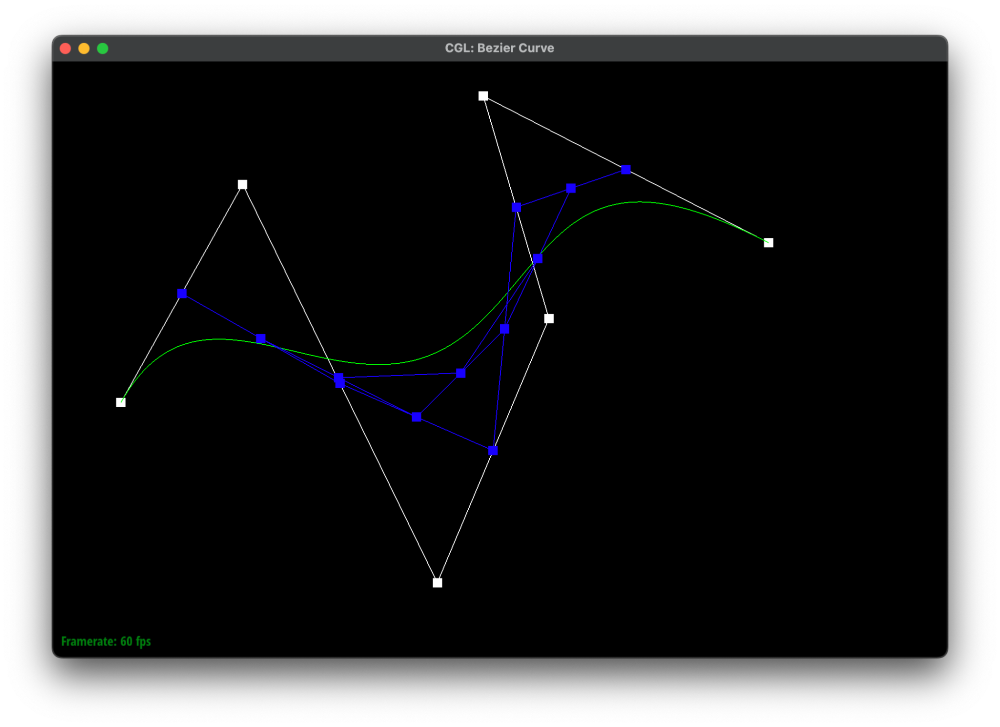
|
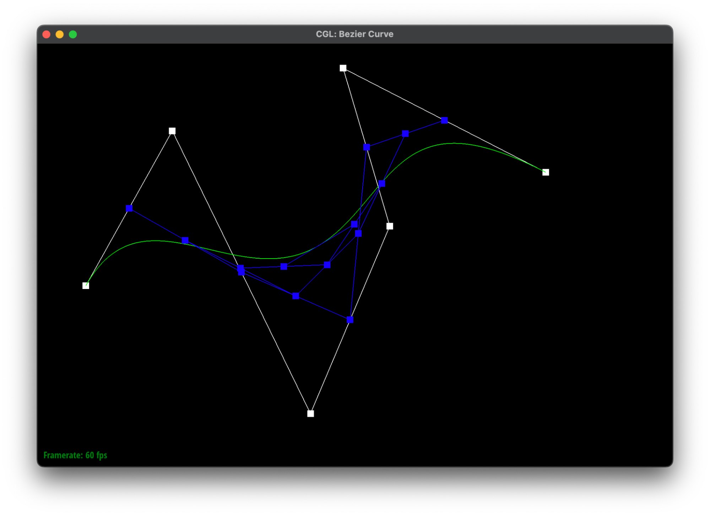
|
|
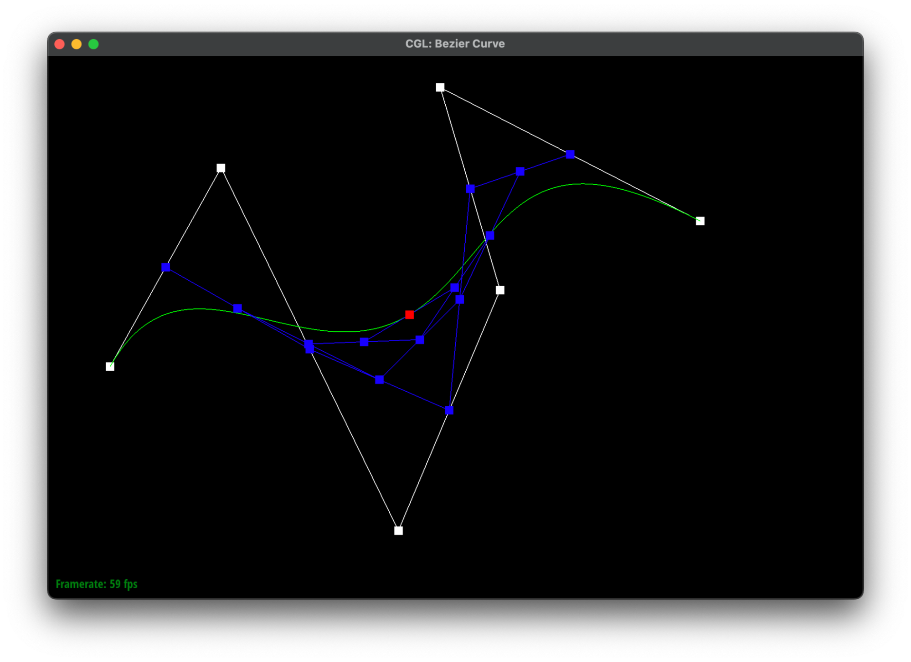
|
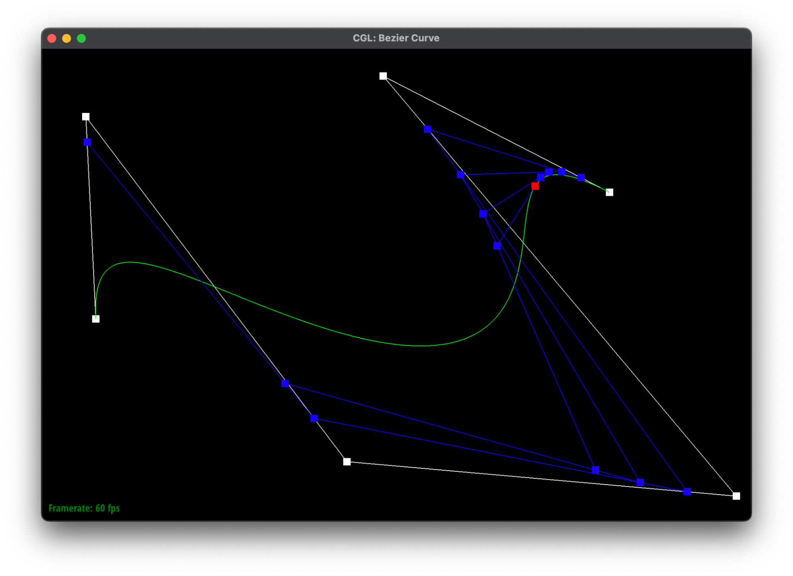
De Casteljau's algorithm extends to the three-dimensional space by separating the evaluation of the parameters u and v when computing the surface curve. We are able to take advantage of de Casteljau’s algorithm by first computing the bezier curves at parameter u in parallel fashion, computing a total of n bezier curves corresponding to the n rows of control points. From the control points derived from the bezier curves at parameter u, we then perform de Casteljau’s algorithm evaluated at parameter v to generate the point on Bezier surface.
Using this idea, we first took the grid of nxn control points and used 1D de Casteljau's algorithm to compute n bezier curves and evaluated them at parameter u to generate n control points. Then, using the 1D de Casteljau’s algorithm on the newly derived n control points, we then evaluated this generated bezier curve at parameter v to find the points on the bezier surface.
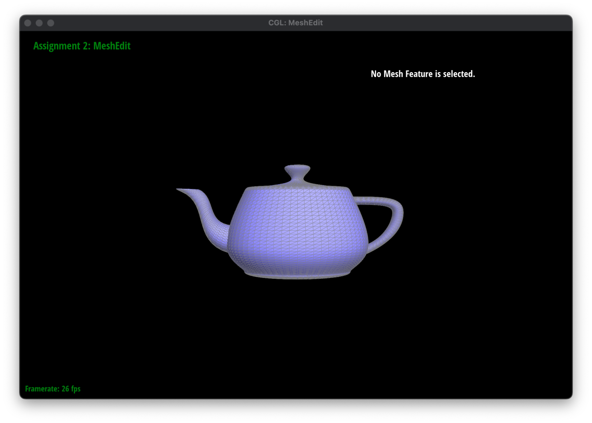
Area-weighted normals were implemented by iterating over the half-edge data structures that exist around a given vertex. To do so, we set up a while loop that would terminate in the case that the current half-edge data structure is the same as our starting half-edge data structure or in the case that we are at a boundary. In this case, Taking advantage of the fact that we are working with manifolds, we will traverse each face and perform the following operations and add it to our base return vector3D object defaulted with parameters (0,0,0):
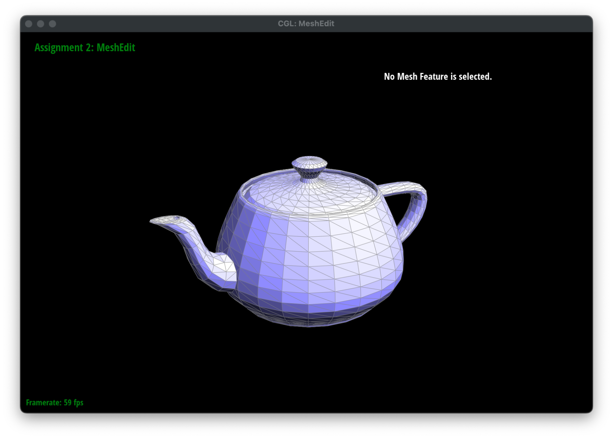
To implement edge flipping we broke down the process into three steps: 1 planning step and two implementation steps. To plan, we first drew out a diagram with all the HalfEdge, Vertices, Edges, and Faces marked across the two meshed triangles. From there, we manually performed the operation, seeing where each edge would be located after the operation. From this, we could see the new relationships across all objects involved in the FlipEdge operation. From this step, we used this as a generalized form apply to our code. This served to be extremely useful for debugging when checking whether our references were all correct since we had a desired outcome for what was expected
In our implementation steps, the first operation that was done was referencing all HalfEdge, Edge, Vertex, and Face objects involved. A total of 10 HalfEdge, 5 Edges, 4 Vertices, and 2 Faces were referenced to be reassigned in later code. After creating the references, we went through the process of reassigning each halfedge, edge, vertex, and face to their appropriate values. By resetting even unchanged values, we were able to ensure that no pointers were lost and that after simultaneous flips we were not creating any unwanted artifacts.
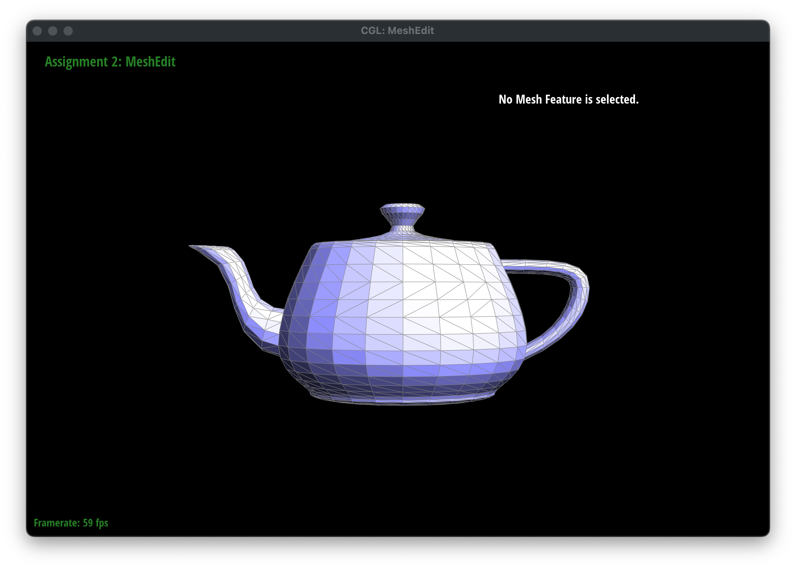
Fortunately, we only had a minor debugging issue. When flipping an edge, we noticed that only 1 face would appear and the other face would disappear. We were able to track down the issue in our hand-drawn diagram as being due to the fact that we were assigning that face to the wrong half edge.
For the split edge trick, we followed a similar approach as part 4, first creating a hand-drawn diagram for the before and after mesh operations. The purpose of this was to see 1) how many objects needed to be created, and 2) what the relationship between each of the new objects and the existing objects would be. After creating this diagram, we went through the process of creating pointers to all the different faces, edges, vertices, and HalfEdges. After creating these references, we created new edges, half-edges, faces, and vertices objects to be inserted into the mesh. After designating the relations for each of the new features to the half-edge mesh, we updated the position of the new vertex to sit at the location 1/2(e0->halfedge()->vertex()->position() + e0->twin()->halfedge()->vertex()->position). After completing our implementation, we verified correctness and debugged by combining different mesh operations together to ensure that the different permutations of flipping and splitting did not result in holes within the mesh due to lost pointers.
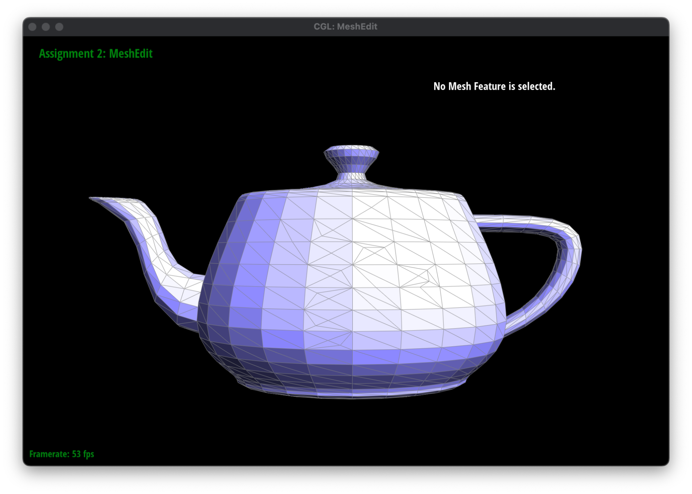 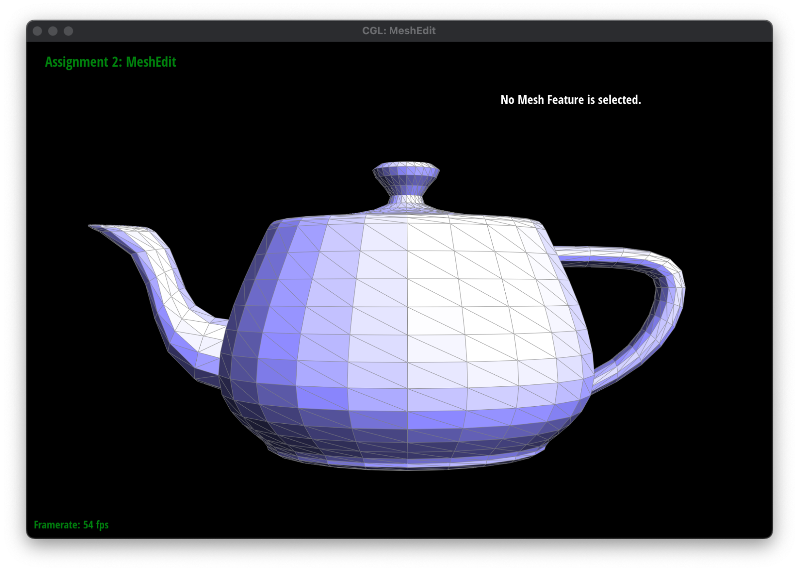
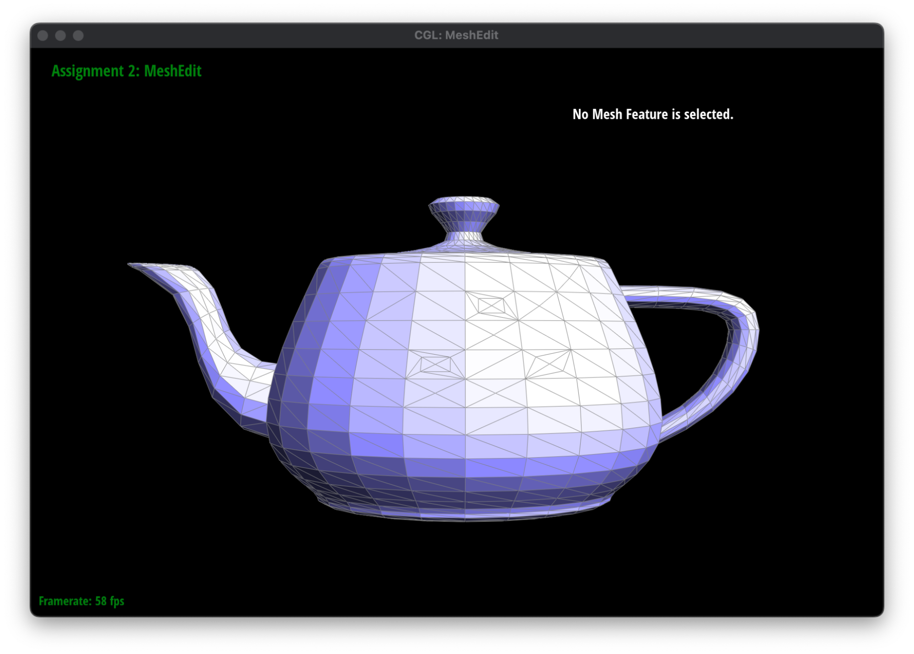
N/A
N/A
We faithfully followed the recommended method of implementing loop subdivision (i.e. update vertex position before performing 4-1 subdivisions over the entire mesh). Specifically, we first precompute the positions of new vertices and store them in the new position of old edges, using the formula (1): 3/8 * (A + B) + 1/8 * (C + D). We then store the updated position of a new or old vertex, using formula (2): (1 - n * u) * original_position + u * original_neighbor_position_sum. This completes step A in the recommended specs. For step B, we loop through all old edges of the mesh, then divide them with the edge split implemented in part 5 and update vertex positions after the split. For new edges that have one new and one old vertex each (XOR was used for this check), we also flip them using the implementation in part 4. These steps complete step B. Lastly, we update all vertex positions in the subdivided mesh using the values already computed, and assign all vertices to be old. This then completes step C.
For debugging, we mostly relied on plugging and playing with multiple print statements to counter problems with infinite loops. We also spent a significant amount of time debugging segfaults, which we later realized was caused by bad loop usage (do…while instead of while) when computing original_neighbor_position_sum.
Above is an example of loop subdivision on icosahedron.dae. One key observation is that sharper corners and edges become smoothened and rounded after loop subdivision. This is expected as loop subdivision creates new vertices that will contribute to a more uniform mesh surface. Pre-splitting certain edges should help alleviate this effect as it makes certain parts of the mesh “less uniform,” which would help preserve sharper corners. For more examples, refer to the cube.dae screenshots below.
We attempted pre-splitting some edges on cube.dae to help with asymmetry. While the resulting mesh is still very smooth, it is obvious that pre-splitting was helpful in preserving sharp corners, as shown from the screenshots below.
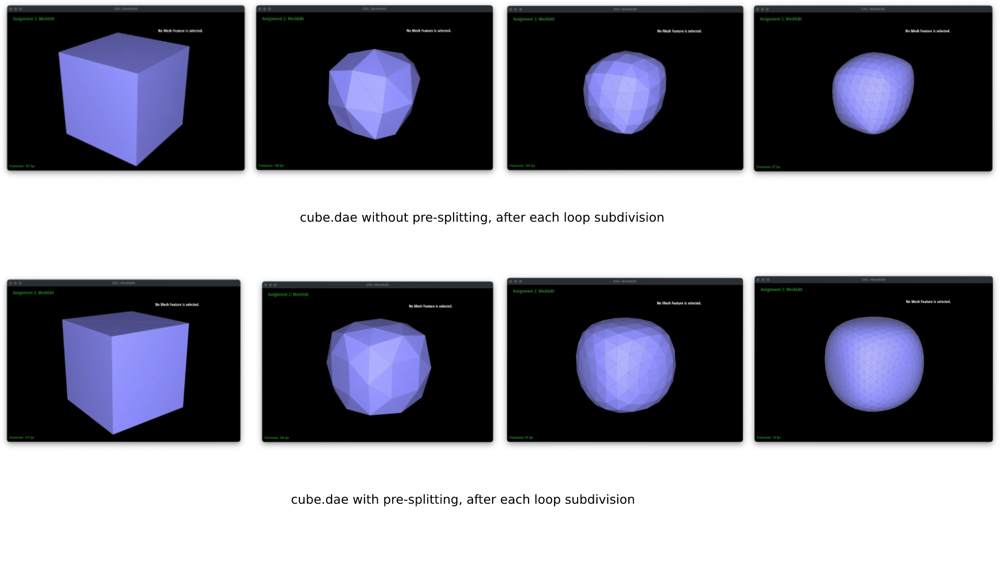As shown above, since the starting topology of the cube is different due to pre-splitting, the end result that each converges to is also different. With the help of pre-splitting, we were able to modify the starting topology of the cube to create a more consistent and symmetric mesh.
N/A
N/A
N/A
N/A